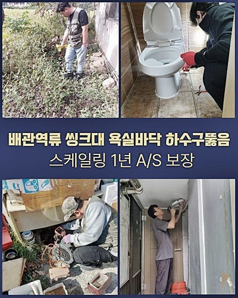
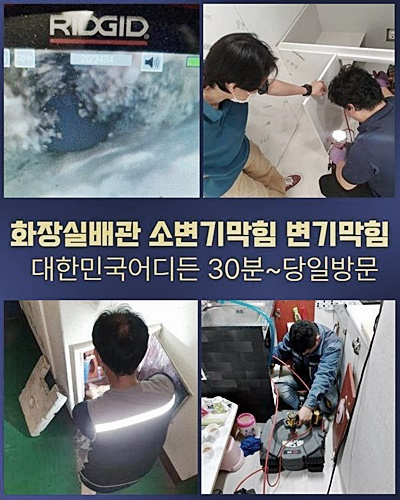
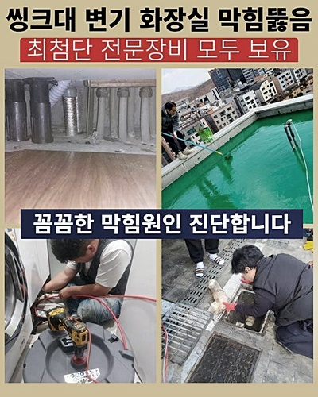
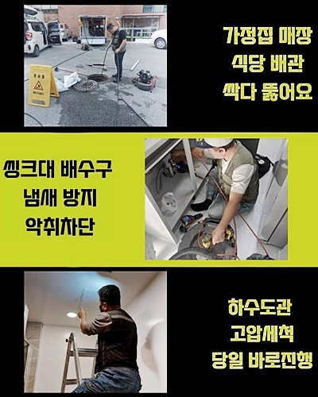
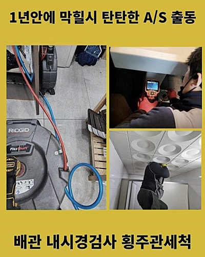
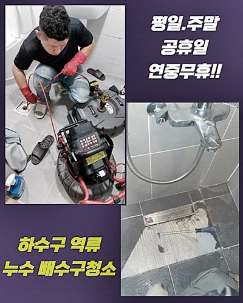
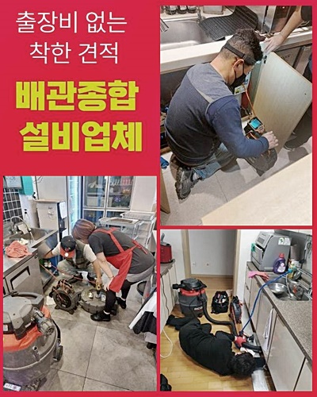

🏠 종로 내자동싱크대배수관역류 사간동 배관내시경카메라 설비
용인시 처인구 고압세척 전문 시공 후기

📋 작업 개요
- 위치: 용인시 처인구, 수원시 영통구, 화성시 동탄
- 서비스 유형: 고압세척, 내시경점검
- 작업 일시:
- 업체명: 하수구수사대 (010-5615-2118)
🔍 문제 상황
종로 내자동싱크대배수관역류 사간동 배관내시경카메라 설비
배수 오류가 발생되면 다양한 방면에서 제동이 생길 수 밖에 없습니다
가정에서와 같이 외부도 똑같아요
역류의 경우 가령 하수만 배출되는게 아닌 내부에 쌓인 찌꺼끼와 냄새들이 발생되기에 신속히 헤쳐나가야합니다
며칠전 내방드린 장소도 배수구에서 역류하게되는 바람에 저희께 문의하셨는데요
도착한 뒤 증세를 확인해보았습니다
지하부분의 하수관에서 문제가 생긴 것으로 악취들도 심했죠
이채로는 내부 상황을 못보아서 검수를 할 예정이였습니다
부유하는 잔해는 걷어내고 펌프기기를 사용된뒤 오수를 제거해요
그래야만 내시경장치로 진단할때에 내부가 깨끗히 보이는데요
내시경으로 하수관을 관찰하니 슬러지가 뒤엉킨 채 오염된 현상을 띄고있었죠
지금까지 온전히 관리되질 못해 증세가 좋지못한 방향으로 나아간거에요
배수관에도 잔여물이 많았고 그동안에 배출된 기름의 잔재와 음식찌꺼기 때문에 증상이 발생되게 된것인데요
이것과같이 자주 사용해야되는 배관이라면 주기성을 가지고 관리하는게 이용되는데요
공동의 성격을 띈다면 문제 발생 확률이 많기에 깊은곳에서부터 잔해물이 침전될 가능성이 높은겁니다

🔎 원인 분석
💡 전문가 진단: 정밀 진단 장비를 사용하여 슬러지의 고착 여부를 판명하고 타격/세척 작업을 실시했습니다.
또한 이물질은 부유하는 당시엔 점액질의 모습을 띄지만 축적을 거듭하며 형태들이 변하죠
고착된 상태로 변하며 간단한 수습만으론 해결하기 힘들만큼 단단해져요
이같은 현상이 가속화되면 전문진의 손을 빌려 빈틈없이 시공해야해요
일반적으로은 심층부로부터 잔해물이 누적되요
내시경장비를 가용한 뒤 하단을 목표로하고 주시했죠
기름때가 고착되는 바람에 증상을 초래한것을 오차없이 알았는데요
지금껏 빠르게 된 관리가 없었던 까닭에 고착의 형태들이 심각해서 설명을 드리고 고압노즐분사를 사용해서 고객님의 고민을 해소시키고자 했는데요
배수관 이곳저곳을 살펴 대형 강한 물줄기를 썼는데요
대다수 구경이 작은 경우 소형 고압수들을 사용하겠으나 오늘의 현장처럼 집수시설과 같은 하수관에서는 대형 강한 물줄기를 써서 고착물을 분쇄하죠
자동차와 결속되어있는 고압세척기장비를 운용시켜야하죠
보통의 경우 청소 시에 써야되는 수도를 끌어와야되는데 반대로 통하여야되는 물은 보유를 하거나 청소전에 주위의 시설관리에 도움들을 거쳐야 바람직한 세척이 이행될 수 있어요
아니면 배관의 모습을 확인하는것이 필요해요
쎈 물을 분사시켜 오류를 해결하므로 적절한 압을 분사하여 세척해주는게 중요하겠습니다
그리고 연결부분에 고압수를 쏜다면 균열의 위험이 상승해 물샘이 발현될 수 있답니다
그리하여 내시경을 써서 배관의 모습을 확인하는게 우선됩니다
잔해가 축적된 부위를 중점하여 작업들을 수행했는데요

🔧 작업 과정
강한 물줄기를 쏘기도 하지만 세척액체들과 고온이므로 고착된 이물을 세척시킵니다
잔여물질을 유화시켜 수월하게 작업하도록 도와주기에 여러모로 순기능을 가지고있습니다
고압수방식의 세척법으로 흡착물까지 구석구석 작업해주었죠
고압분사 방식이 행해지자 잔여물이 분해되며 통수불가했던 하수들이 통수되는걸 보았습니다
제거된 고착물은 직접 봉투들에 옮겨담고 마무리해줬죠
그러나 이 부위 말고도 구간마다 증상이 생겨나 스케일링이 요구되었어요
곳곳의 관로 내부에 잔여물질을 목격할 수 있었어요
그러므로 샤프트기기를 사용해서 잔해물을 청소해주었습니다
잔여물이 위치한 구간을 타겟한 다음 샤프트로 세척했는데요
해당 장비의 사슬이 원 운동을 하며 고착물을 분쇄하죠
직접 이물을 목표로하고 분쇄시키니 흡착된 것까지 떨어지며 배수관을 원상복구시켰죠
걸러진 잔해물을 보았더니 끈적한 기름들이 어마어마했는데요
그렇기에 역류들도 나타났어요
엘보라인에 축적된 녀석들도 신속히 분쇄시키면서 컨디션 회복에 힘썼죠
반대로 내시경도 써서서 내부 상황을 주시하면서 장비를 이용합니다
내시경장비의 이용없이 작업해줄 때에는 하수관의 이물이 없어진건지 체크해볼수가 없어요
그렇기에 하수구 작업에서 내시경기기는 없어서는 안되요
샤프트기기를 통해서 배관 안쪽을 청소한다면 고착물을 온전히 없앨수 있어요
잔해가 지속적으로 퇴적된 것일땐 노후도에 좋지못한 결과들을 선사하니 각별한 주의를 부탁드려요
전체적인 과정을 실시하고서 내시경을 통해 내부 모습을 살폈습니다
남은 잔여물이 없진않은지 체크해봐야하죠
원만한 구배가 행해져야 막히는 사태가 야기되지않아요
하수도는 적합한 기울기를 확보하는게 중요하기에 뚫어내는 시공 완료가 되었더라도 배수되는 양도 기필코 살피는데요
작업 후 내시경장비로 살피니 잔여물질들이 티끌도 안보이는걸 체크했습니다
그런뒤에 하수도로 물들을 배출해주며 수월하게 흘러가나 관찰했어요


✅ 작업 완료
다행히 제대로 내려가는 모습을 보았습니다
앞으론 통수결함을 겪게되는 불미스러운 일들은 없답니다
그때그때 작업을 해주셔야 배관을 빠르게 사용할 수 있어요
잔여물이 침전되어 있을 시엔 오늘처럼 하수도가 역류되는 일이 일어나 안쪽으로부터 증세를 맞닥뜨리게 합니다
꾸준한 검수와 평소에 기름들이 침전되지 못하도록 주의해 주시는 사용되는데요
저희의경우 뛰어난 실력을 바탕으로 다양한 증세를 제거시켜드리죠
전문가의 지식이 필요하시면 아무때나 전화주세요




⚠️ 하수구 배관 막힘 예방 및 관리 가이드
- ✅ 머리카락, 비닐, 물티슈 등 물에 분해되지 않는 이물질은 절대 흘려보내지 마세요.
- ✅ 기름기 많은 식기는 설거지 전 키친타올로 먼저 기름때를 닦아내세요.
- ✅ 주기적으로 배수구에 뜨거운 물을 가득 부어주어 유지방 고착을 방지하세요.
- ✅ 작업 후 1년 이내 재발 시 무상 A/S 보증 서비스를 제공합니다.
💡 핵심 정리
- 확실한 장비 작업(내시경 점검 및 샤프트 스케일링)으로 원인을 뿌리 뽑습니다.
- 작업 후 1년 이내에 동일한 부위 재발 시 100% 무상 A/S 서비스를 보장합니다.
- 서울 · 경기 · 인천 전 지역에 24시간 언제든 긴급 출동할 수 있도록 항시 대기 중입니다.
❓ 자주 묻는 질문 (FAQ)
🚨 용인시 처인구 고압세척 문제로 고민이신가요?
정확한 원인 진단과 확실한 시공으로 재발 없는 해결을 약속드립니다.
24시간 긴급 출동 | 서울 · 경기 · 인천 전지역 | 1년 내 재발 시 무상 A/S